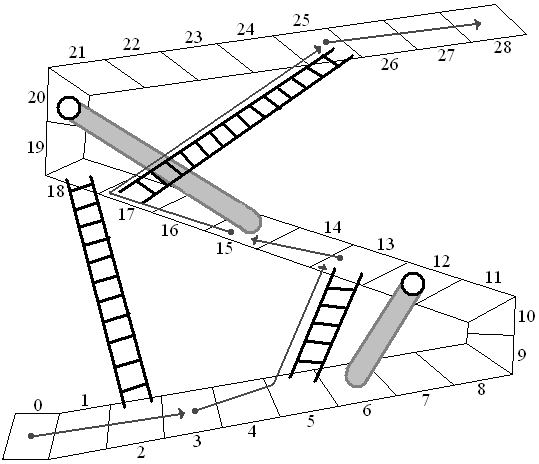
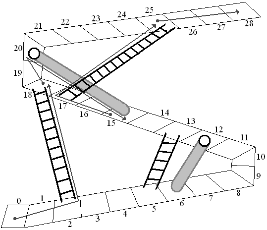

| Source file: | up.{c, cpp, java} |
| Input file: | up.in |
|  |
 |
| Figure 1 | Figure 2 |
This problem is based on a children's game, Chutes and Ladders, where players take turns jumping a number of steps along a path. If they land on the base of a ladder, they rise to the top of the ladder in the same turn. If they land at the top of a chute, they slide down to the bottom in the same turn. The idea is to get to the final step on the path. In the children's game the number of steps to move in a turn is determined randomly, so the game requires no decisions. In the version here, Up and Down, players get to choose the number of steps to jump forward in each turn. Both figures above show spaces numbered from 0 to 28, with several chutes and ladders. They show two different possible sequences of moves, assuming jumps of 1, 2 or 3 are allowed. Each jump is illustrated starting at a gray dot and ending at an arrowhead, jumping 1-3 places ahead, sometimes ending there, and sometimes shifting up a ladder or down a chute. The players in Figures 1 and 2 finish in 5 and 4 turns respectively. Figure 2 demonstrates the minimum number of turns for this path configuration and a maximum jump of 3.
It gets harder a figure out the best path if there are more chutes and ladders and many more spaces along the path! Be careful of your algorithm, given the large limit on the number of spaces specified below.
Input: The input will consist of one to twenty data sets, followed by a line containing only 0.
The first line of a dataset contains blank separated integers w s p, where w is the number of the winning space, 3 ≤ w ≤ 1,000,000,000, s is the maximum number of spaces to jump in each turn, 2 ≤ s ≤ 6, and p is the total number of chutes and ladders, 1 ≤ p ≤ 40.
The remaining lines of the data set consist of pairs of integers bi ei, for i = 1, 2, ... p. Each bi ei pair is the beginning space and ending space for a chute or ladder, so a turn with a jump to bi actually ends at ei. All the integers are positive and less than w, and none of these 2p numbers appears more than once. Following the rules of the game, it is possible to eventually reach space w, starting from space 0, for each dataset. The numbers bi are in increasing order. Numbers in these lines are separated by either a single blank or a newline.
Output: There is one line of output for each data set, containing only the minimum number of turns it takes to start at space 0 and end at space w, with the jump in each turn chosen as a positive integer no larger than s.
The first sample input data set corresponds to the configuration in the Figures.
| Example input: | Example output: |
| 28 3 5 2 18 5 13 12 6 17 25 20 15 50 6 1 9 45 0 |
4 3 |
Last modified on October 16, 2009 at 4:07 PM.